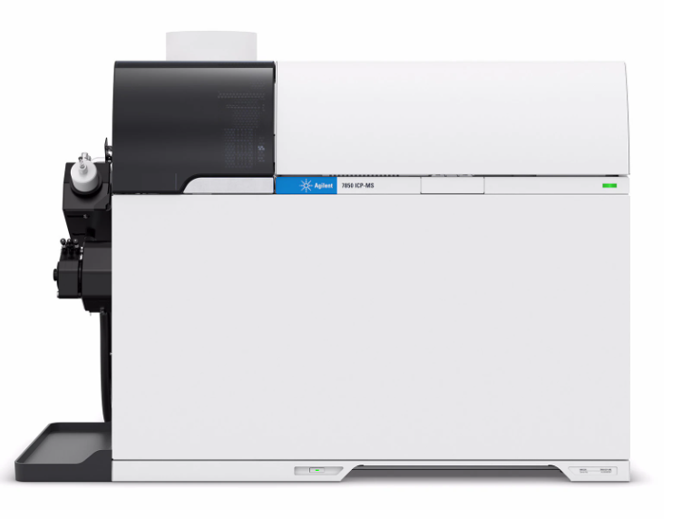
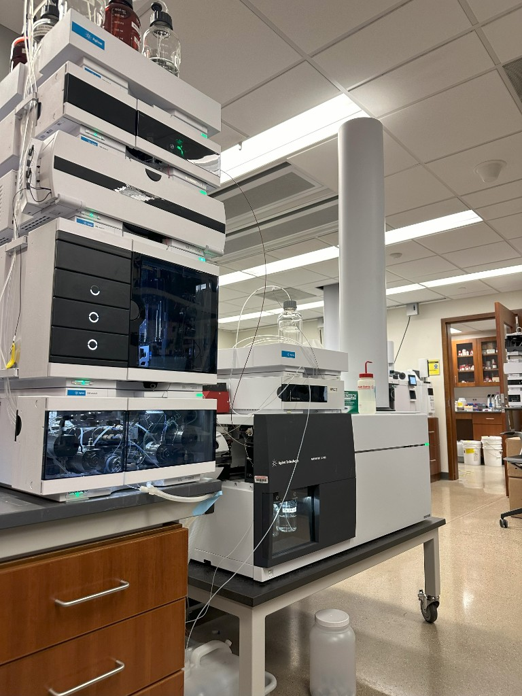
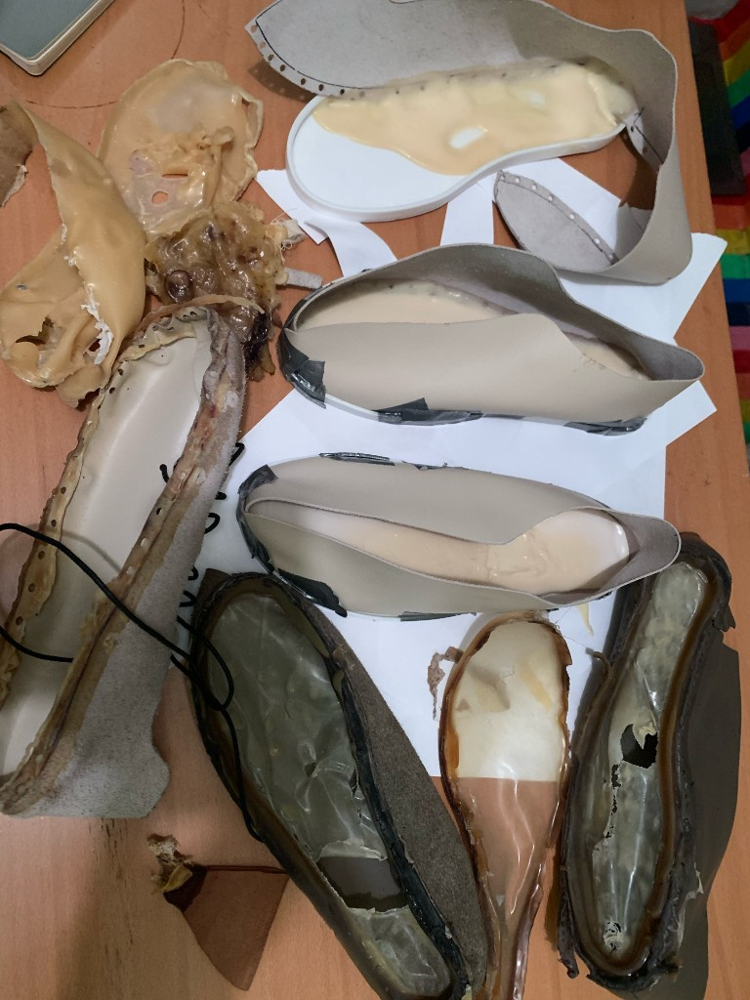
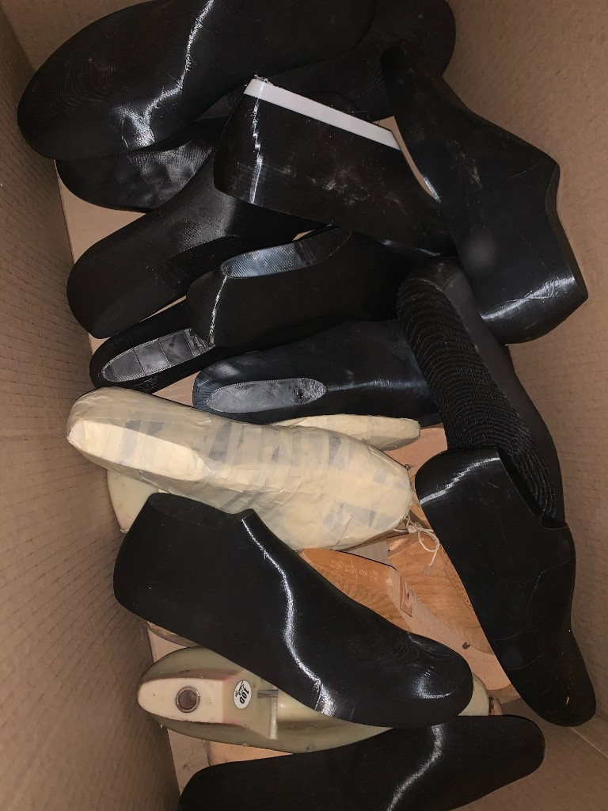
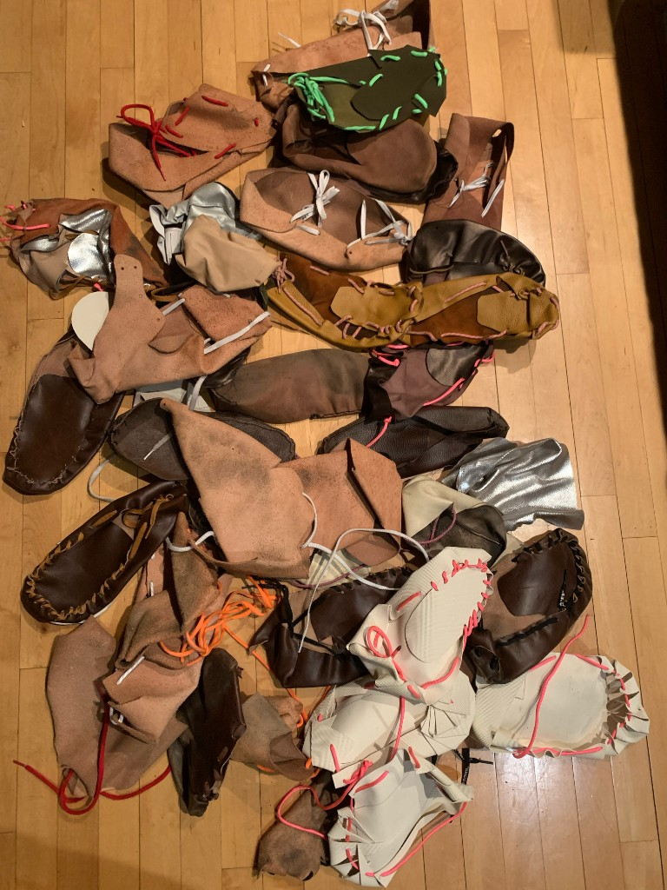
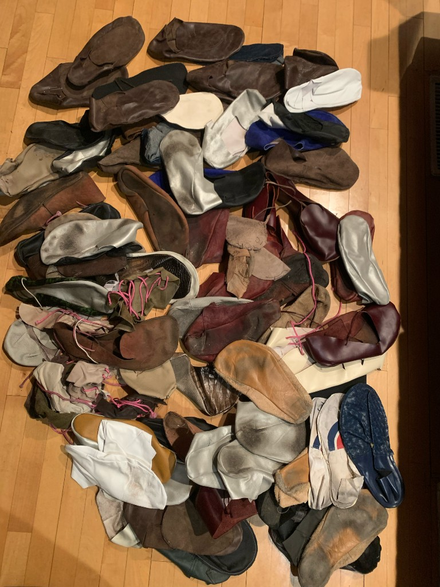
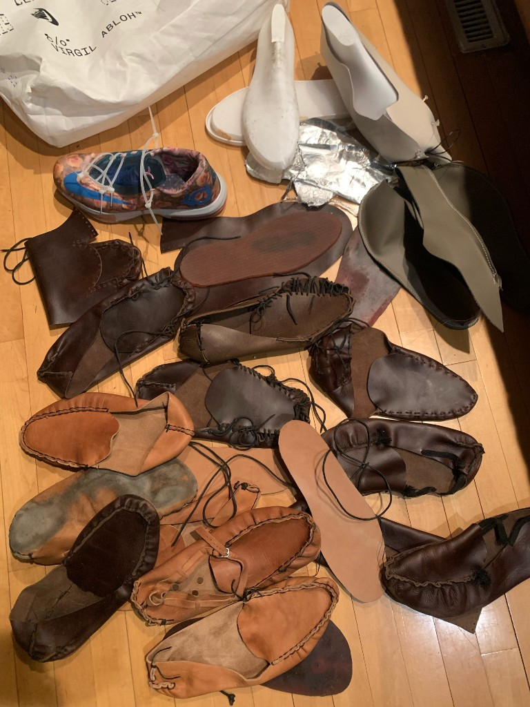
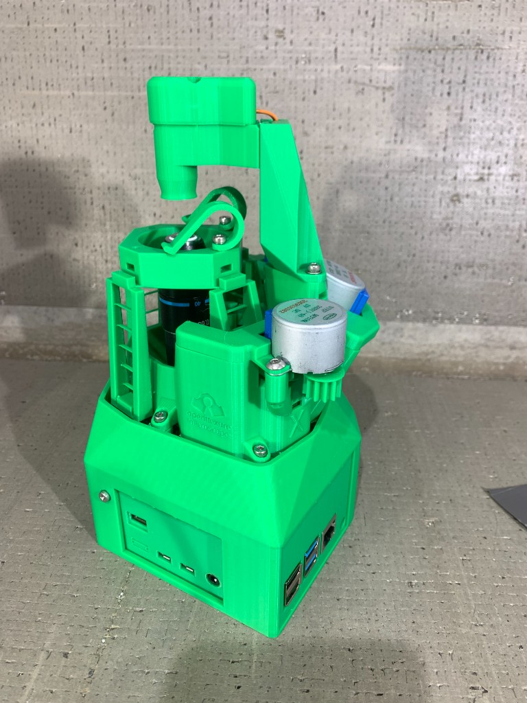
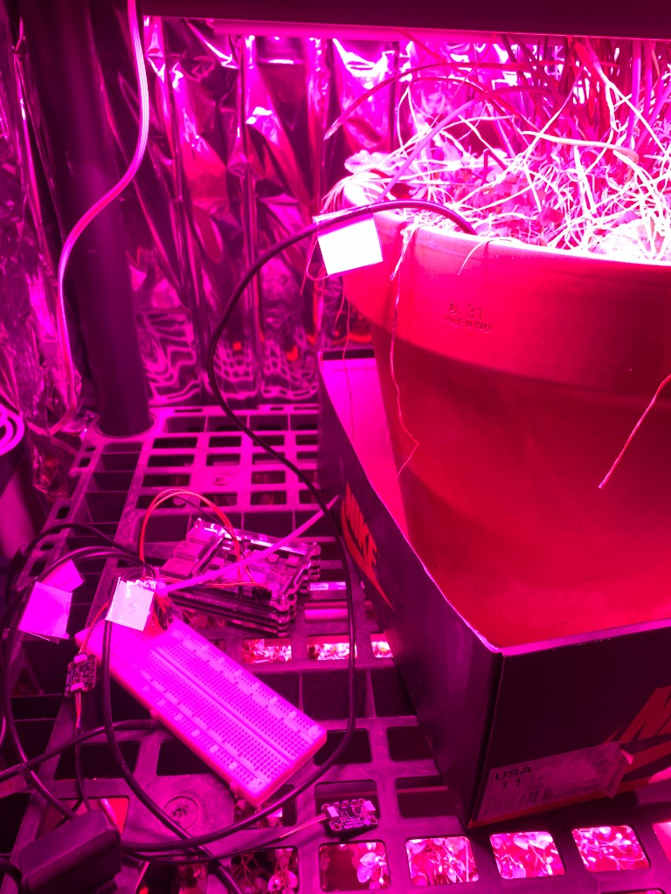

Using Agilent 7850 Inductively Coupled Plasma Mass Spectrometry (ICP-MS) at Northwestern QBIC for Elemental Quantification and using Agilent 6545 Q-TOF LC/MS for untargeted quantification of vitamins, pesticides, and other potential contaminants in McDonald's and whatever other food samples I can afford to test.


With the goal of an extremely cheap, extremely quick and easy to make, optimal shoe in every way, being grounding, barefoot with right amount of cushion, enough toe space without looking duck/clown foot, adjustable in toe area for different foot shapes, entirely natural materials, and looks and materials on par with finest handmade English and Italian shoes. The most recent ones are tests of pouring natural latex rubber into holes made on the upper, forming the sole and joining to the upper at the same time, which would also facilitate having a full grounding sole using conductive carbon fillers. Work spanned from medieval style turnshoes to handmade moccasins to one piece laser cut to 3d printed sculpted lasts to apprenticing with master shoemakers. None of these look good enough to wear yet but I hope to collaborate with established footwear companies and give them what I learned from my work for free just to have better shoes available.





Modifying OpenFlexure open source microscope for use in live blood analysis with instructions from the Bigelsens, discoverers of holographic blood, and further use for investigating properties of Gerald Pollack's structured 4th phase water for potential huge implications in the function of the heart, fluid flow in living things, applications in energy storage, and Veda Austin's hydroglyph memory properties of water.

See https://github.com/ekulkisnek?tab=repositories. Includes a wide variety of projects, most generally useful is a free blue light and flicker reducer for Mac and Windows.
Packaging Thomas Keller's 3 Michelin Star Veal Stock as served in The French Laundry, Alinea, Per Se, and other top restaurants, prepared extremely low moisture as in the portable soup used in the Lewis and Clark expedition, for sale to individual consumers. The nutrients in bone broth are completely absent from nearly all diets and this deficiency could explain a very large range of health issues. Part of the Hatchery Chicago Sprouts Food Business Incubator cohort. Saving up money for the first order.
Concept draft site at https://westonpricewiki.vercel.app. Completing in the next few months as AI web scraping improves.
Using raspberry pi, cheap sensors, and open source code to attempt to grow food indoors year round controllable and monitorable through a web interface. Currently working on applying similar automation methods to backyard chicken care.

On eBay https://www.ebay.com/usr/goatproductonline and soon crossplatform selling used Nike's and other clothes, including some Off-White pieces, and working on sourcing good quality good price new products such as these $12 grounding slides which have been selling well despite no advertising or publicity https://www.ebay.com/itm/376467688505 and USA Organic Cotton T shirts.
Over 3 years I've been iteratively applying for jobs at Atomic Semi, a semiconductor fabricator company, without success. When I showed up there and asked the hiring manager what it would take he said if I had experience in a fab they could hire me. I finally found I can pay to work in the Nanofabs at UIC, Northwestern, and UChicago and I am currently trying to learn how to design experiments worth paying the hundreds per hour the equipment will cost to use. My first projects will likely be lights that emit optimal wavelengths for humans, around 3.1 um, but there is still a lot more learning for me to do. I put this here as a sort of indication of end goal. At least for now. If anyone at the Virgil Abloh Archive read this far I would love the opportunity to speak with the team and see (or participate in) how you approach problems.